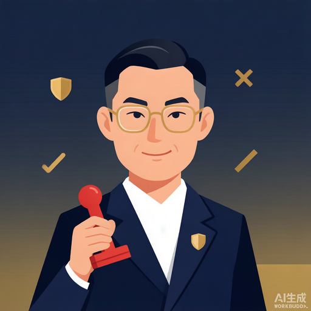
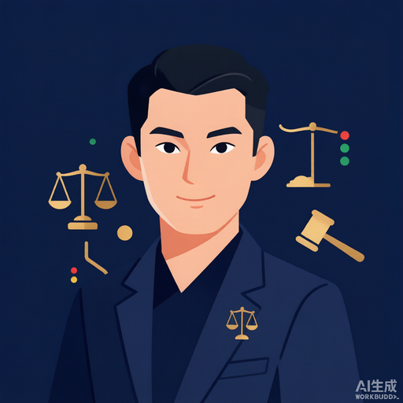

一个证据优先的周度复盘闭环：八角色专家团分段协作、单一问责中枢，已核验的宏观因子只调整风险预算——永不替代证据，更不凭空制造结论。
收集、验证、合成、仲裁、决策、发布——每阶段有显式的输入→输出契约，产物全程可审计。
行情、披露、新闻、宏观、商品的带日期观察，统一交付校验层。
信源一致性、时间戳、缺失与冲突检查；未解决分歧阻断结论。
六视角打分经 MCDA（TOPSIS + VIKOR）硬合成为中立证据矩阵。
硬生存门槛 + 信号优先级；规则引擎主裁，哲学灰区兜底。
把红绿灯翻译为下一周期条件化检查点、触发区间与风控。
渲染可审计的 Markdown / HTML 周报，含证据截止点。
单一问责中枢 —— 任何产物必须经过 进化负责人（中枢） 中转，禁止越级直连。
一个阶段一个责任人。复盘与进化回流后，进入下一轮收集。


宏观叙事不能推翻有效的趋势通道证据；通道结果也不能推翻数据冲突、小样本验证或生存风险门槛。每层只对自己的问题负责。
门语：能改进流程的，先过人这一关——批准、留痕、可回滚，缺一不晋级。